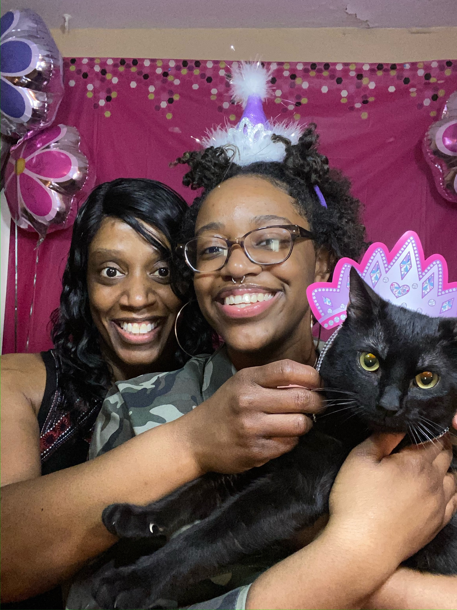

Section from Verse 1
I was three years old when you and I moved to the Chi
Late December, harsh winter gave me a cold
You fixed me up something that was good for my soul
Famous homemade chicken soup, can I have another bowl?
You work late nights just to keep on the lights
Mommy got me training wheels so I could keep on my bike
And you would give me anything in this world
Michael Jackson leather and a glove, but didn't give me a curl
And you never put no man over me
And I love you for that mommy, can't you see?
Seven years old, caught you with tears in your eyes
'Cause a nigga cheating, telling you lies, then I started to cry
As we knelt on the kitchen floor
I said mommy I'ma love you 'til you don't hurt no more
And when I'm older, you ain't gotta work no more
And I'ma get you that mansion that we couldn't afford
See you're, unbreakable, unmistakable
Section from Verse 2
Forrest Gump mama said, "Life is like a box of chocolates"
My mama told me go to school, get your doctorate
Something to fall back on, you could profit with
But still supported me when I did the opposite
Now I feel like it's things I gotta get
Things I gotta do, just to prove to you
You was getting through , can the choir, please
Give me a verse of "You Are So Beautiful To Me"
sup·port
bear all or part of the weight of; hold up.
give assistance to, especially financially; enable to function or act.

In high school, everyone had jobs. With jobs, most kids also had cars. Not me though. We couldn’t afford to have two cars, hell we don’t even have a driveway for one car let alone two. My mother drove me back and forth to work any time I needed to. And for some months I had worked two jobs. She would drop me off at one, pick me up, get me lunch and take me to the other. I remember leaving out into the darkness at work, waiting for my mom’s headlights to become visible. Some nights she’d be the only car on because the rest of my coworkers had their own vehicles. She didn’t mind though. When I got into Dartmouth, my mother didn’t understand what an Ivy was, she was just happy I had gotten into a school and didn’t have to pay anything. When I became an AKA, she knew little about Black Greek Letter Organizations and was just happy I had found a community for me.
When I decided to transfer, my mother supported that too. And despite being a teacher with three kids, debt, and red eviction notices, she still makes a way to give me extra money so I can hang out (because Penn is full of wealthier people with money and free time). She never fully understood why I wanted to “keep up” with others, but did her best to make sure I knew that being different was okay.
I owe my mom more than I can give her in this lifetime. For all the times she was at her lowest and never showed it because she needed to take care of her kids. For the times I was too young to understand why I couldn’t get the UGG boots with UGG on the back and mine were AIRWALKS from Payless. For the times I didn’t understand why my sister and I had to share our games for the DS.